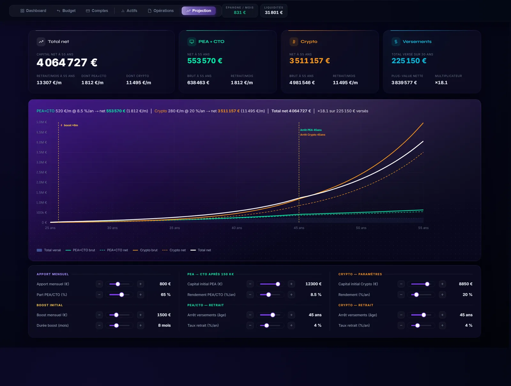
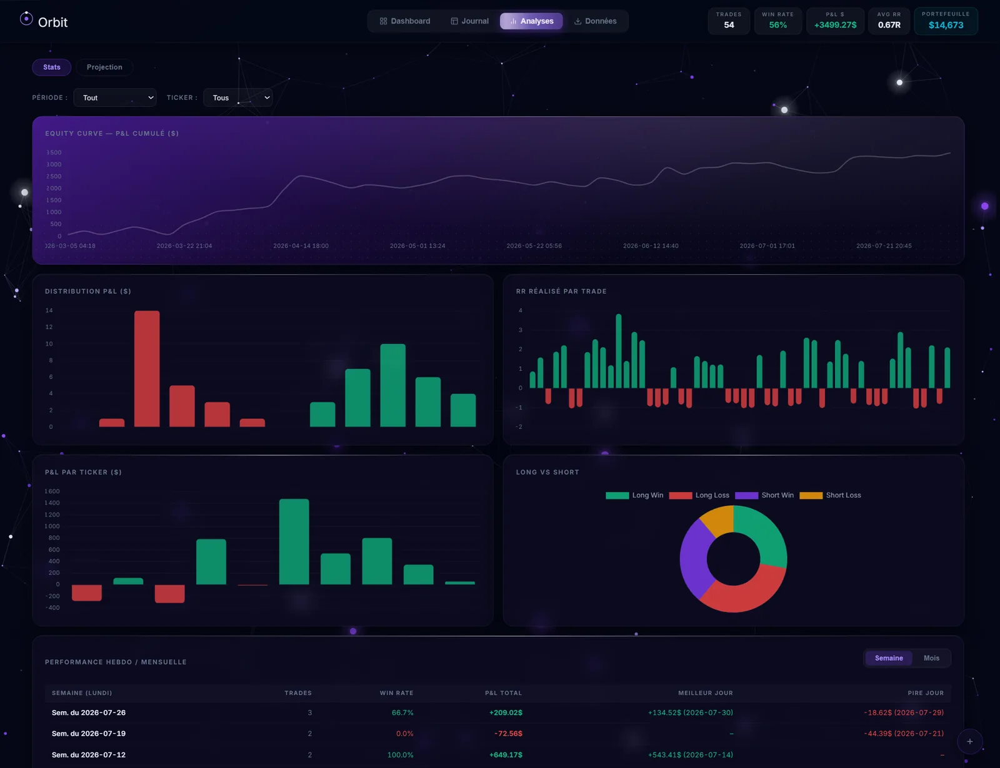
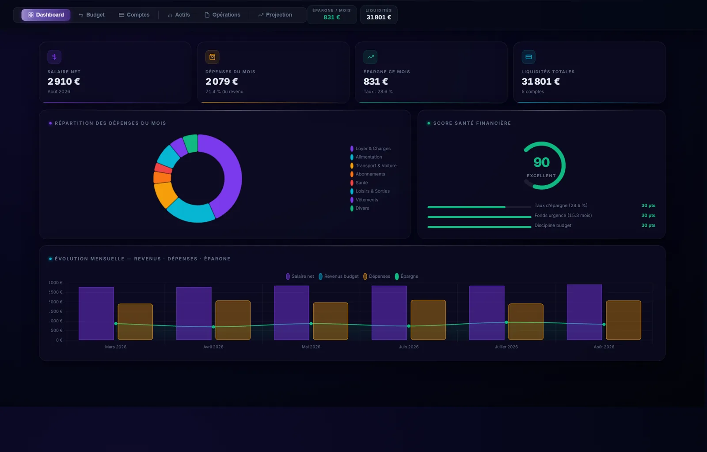
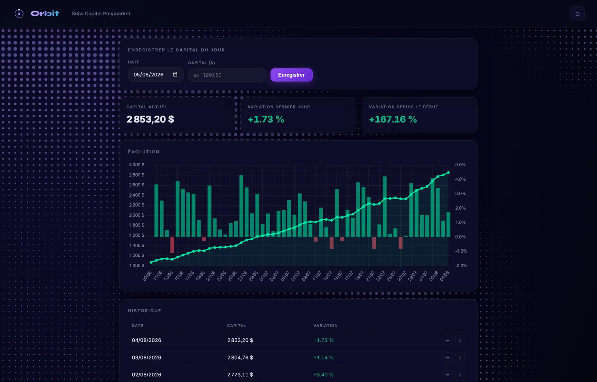

🛰️ Projet phare — un hub d'apps data
Orbit
Un hub de données perso : trading, budget, planning & actu des marchés
Un launcher FastAPI qui sert plusieurs dashboards HTML/CSS/JS dans un hub — chacun transformant des données brutes en graphiques, KPI et projections. Plus une veille news crypto résumée par un LLM local (Ollama), le tout tournant sur ma propre machine.
6 apps
dans un seul hub
Local LLM
IA en local
9k→1.75k
lignes refactorisées
Voir les détails →
✦ Démo live ↗



